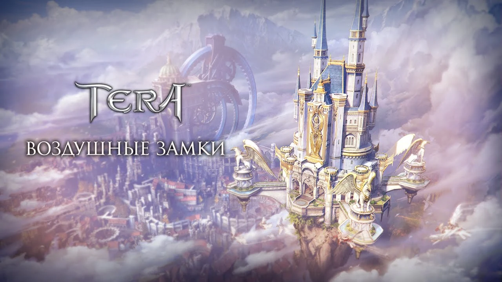

How the Russian launch was staged
- monthly active players after launch
- 150 000
- stages from closed to open beta
- 3
- 2015 character pre-creation window
- 16–22.02
Closed beta was followed by character pre-creation and then open beta. Early character creation was available to holders of two founder’s packs, Gold and Silver. That difference matters when comparing their behaviour with other players.
Player figures are from the résumé. The dates and access rules are from the report dated 15 February 2015.
From closed testing to opening the servers
I led marketing for the Russian launch. At each stage players had a different next step: try the game in closed testing, create a character early or join once access widened.


What the staged launch let players do
Closed testing let players try the game. Early character creation gave them a chance to get ready, and open testing widened access. After launch, the game reached 150,000 monthly active players.
Product analysis
Which players returned after launch?
Activation after character creation
The 150,000 monthly active players figure shows the reach of the launch. Within comparable acquisition channels and launch waves, I’d compare players who created a character before access opened with players who did so afterwards. I’d measure the share who finished the tutorial in the first 24 hours from the start of access. This would show an association with activation. Players who prepared early may have been more motivated to begin with. Early character creation also required a founder’s pack.
Where players lose interest
Among players who started the game, I’d track day-seven retention by server and first-session progress. If many players created a character but never entered the game, I’d inspect queues and login errors. If players entered successfully but rarely came back, I’d look at where their first session ended.